概述
本章节介绍如何搭建 GCC 环境，包括 Windows 平台和 Linux 平台，请根据操作系统选择对应的使用指南。
Windows 平台：以 Windows 10 64-bit 为例。
Linux 平台：以 Ubuntu 22.04 x86_64 为例。
准备 GCC 环境
包括cmake编译环境，python环境，以及其他工具软件。用户可以采用两种方式搭建环境：
方式1： 下载Realtek提供的免安装软件合集，并在构建前运行ameba脚本自动配置环境变量。这种方式不会影响用户原先的软件环境，并且可以避免软件版本带来的兼容性问题。
方式2： 自行下载安装需要的工具软件并配置对应的环境变量。
在C盘下新建
C:\rtk-toolchian文件夹下载压缩包并解压至
C:\rtk-toolchian文件夹下，可点击下方任意链接下载，中国大陆地区用户建议使用aliyun链接。备注
压缩包需要解压到指定的
C:\rtk-toolchian路径下，如果要更改路径，需要同步修改ameba.bat中的相关变量。进入到SDK根目录，双击运行根目录下的
ameba.bat，将自动配置环境变量，后续请继续在此窗口运行命令。备注
如果用户想在Windows下使用 Git Bash 或 MSYS2 等类Unix的命令行环境，那么请在SDK根目录下打开终端后运行
source ameba.sh。
下载压缩包并解压至
/opt/rtk-toolchian文件夹下 TODOmkdir /opt/rtk-toolchain cd /opt/rtk-toolchain wget ..... tar -jxf ...
备注
压缩包需要解压到指定的
/opt/rtk-toolchian路径下，如果要更改路径，需要同步修改ameba.sh中的相关变量。由于linux下无法提供python的免安装版本，所以需要用户预装python。
sudo apt install python3 python3-pip python3-venv备注
运行
python --version检查python版本， 建议大于 3.10。如果主机中存在多个版本的python，可以使用命令
update-alternatives --install /usr/bin/python python /usr/bin/python3.x 1选择特定版本的python，x代表期望的版本号。如果出现报错
command 'python' not found，尝试运行ln -s /usr/bin/python3 /usr/bin/python解决问题。
进入到SDK根目录，执行
ameba.sh脚本，将自动配置环境变量。source ameba.sh备注
每次重启终端后，都需要执行
source ameba.sh命令设置环境变量
如果用户希望使用本地已有的环境，也可以手动下载所需要的软件，但这种方式可能会影响用户的其他环境。
Software |
Version |
|---|---|
cmake |
>=3.20 |
ninja |
>=1.10.1 |
ccache |
>=4.5.1 |
python3 |
>=3.10 |
wget |
recommand newest |
7zip |
recommand newest |
使用Chocolatey进行软件安装。Chocolatey是Windows环境下的包管理器，可以在Windows下方便地管理所需软件的生命周期。如果拥有Windows主机的管理员权限，推荐使用Chocolatey进行安装。
安装Chocolatey
以管理员模式打开PowerShell，如果用户拥有对应权限，打开的Powershell窗口上会出现管理员标识。
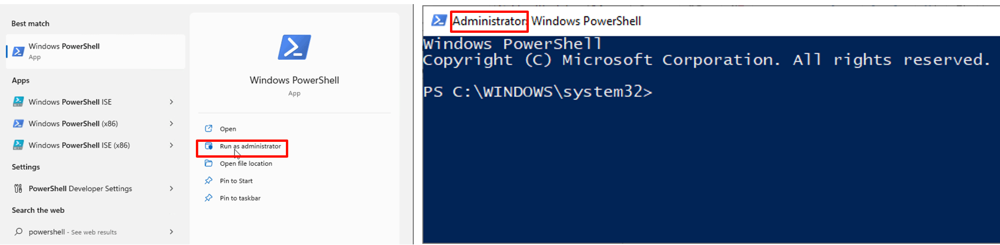
在打开的Powershell窗口中执行:
Set-ExecutionPolicy AllSigned Set-ExecutionPolicy Bypass -Scope Process -Force; [System.Net.ServicePointManager]::SecurityProtocol = [System.Net.ServicePointManager]::SecurityProtocol -bor 3072; iex ((New-Object System.Net.WebClient).DownloadString('https://community.chocolatey.org/install.ps1'))
安装软件包
choco feature enable -n allowGlobalConfirmation choco install cmake --installargs 'ADD_CMAKE_TO_PATH=System' choco install ninja ccache python310 wget 7zip
安装pip包
进入SDK根目录运行：
pip install -r tools\requirements.txt
{kind=link}
安装软件，需要用户拥有sudo 权限：
sudo apt-get install cmake ninja ccache wget python3安装pip包
进入SDK根目录运行：
pip install -r tools/requirements.txt
安装工具链
默认情况下，工具链会在第一次构建项目时被自动安装到默认路径下，即 Linux 下的 /opt/rtk-toolchain 和 Windows 下的 C:\rtk-toolchain。
在进行项目构建之前，我们会检查工具链是否被正确安装以及版本是否匹配。如果弹出报错信息，请根据报错信息修复问题并尝试重新构建。
工具链压缩包默认托管在github上，首次构建时会尝试从github下载工具链压缩包。如果下载遇到问题，请确认主机是否可以正确访问github。如果无法正常访问，请通过以下命令更换下载源：
build.py -D USE_ALIYUN_URL
默认的工具链安装路径为 Windows:
C:\rtk-toolchain, Linux:/opt/rtk-toolchain。如果需要修改工具链安装路径，请修改在cmake/toolchain/ameba-toolchain-xxx.cmake中的TOOLCHAINDIR变量 。
备注
如果工具链安装仍然失败，请按照下方步骤进行手动下载安装。
本小节介绍手动下载并安装工具链的详细步骤。
从以下链接下载工具链压缩包.
请点击任意一个链接下载 asdk 压缩包，来自中国大陆地区的用户推荐使用 aliyun 下载地址。
需要下载两份工具链：asdk 与 vsdk， 来自中国大陆地区的用户推荐使用 aliyun 下载地址。
需要下载两份工具链：asdk 与 vsdk， 来自中国大陆地区的用户推荐使用 aliyun 下载地址。
请点击任意一个链接下载 asdk 压缩包，来自中国大陆地区的用户推荐使用 aliyun 下载地址。
在C盘创建
rtk-toolchain文件夹。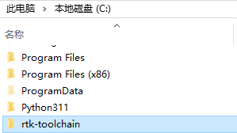
解压
asdk-10.3.x-mingw32-newlib-build-xxxx.zip至C:\rtk-toolchain并重命名为asdk-10.3.x-xxxx。其中xxxx为工具链的数字版本号，在解压后的文件夹命名中添加版本号可避免不同版本软件的覆盖。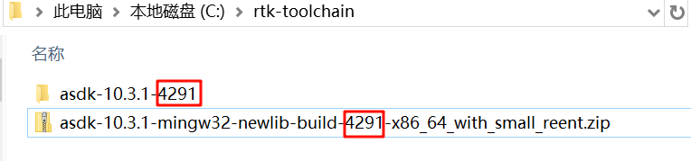
{kind=link}
{kind=link}
备注
工具链的解压路径需要和图片中的保持一致，除非在
cmake/toolchain/ameba-toolchain-xxx.cmake中修改默认的toolchain路径。如果在
cmake/toolchain/ameba-toolchain-xxx.cmake中定义的路径下没有检测到可用工具链，脚本会自动创建下载任务并解压到对应位置。
本小节介绍手动下载并安装工具链的详细步骤。
在
/opt路径下创建文件夹rtk-toolchain。mkdir /opt/rtk-toolchain下载工具链压缩包至
/opt/rtk-toolchain下并解压来自中国大陆地区的用户推荐使用 aliyun 下载地址
download from github
cd /opt/rtk-toolchain wget https://github.com/Ameba-AIoT/ameba-toolchain/releases/download/10.3.1_v4/asdk-10.3.1-linux-newlib-build-4291-x86_64_with_small_reent.tar.bz2 tar -jxf asdk-10.3.1-linux-newlib-build-4291-x86_64_with_small_reent.tar.bz2 mv asdk-10.3.1 asdk-10.3.1-4291
download from aliyun
cd /opt/rtk-toolchain wget -P /opt/rtk-toolchain https://rs-wn.oss-cn-shanghai.aliyuncs.com/asdk-10.3.1-linux-newlib-build-4291-x86_64_with_small_reent.tar.bz2 tar -jxf asdk-10.3.1-linux-newlib-build-4291-x86_64_with_small_reent.tar.bz2 mv asdk-10.3.1 asdk-10.3.1-4291
需要下载两份工具链：asdk 与 vsdk， 来自中国大陆地区的用户推荐使用 aliyun 下载地址。
download from github
cd /opt/rtk-toolchain wget -P /opt/rtk-toolchain https://github.com/Ameba-AIoT/ameba-toolchain/releases/download/10.3.1_v4/asdk-10.3.1-linux-newlib-build-4291-x86_64_with_small_reent.tar.bz2 tar -jxf asdk-10.3.1-linux-newlib-build-4291-x86_64_with_small_reent.tar.bz2 mv asdk-10.3.1 asdk-10.3.1-4291 wget -p /opt/rtk-toolchain https://github.com/Ameba-AIoT/ameba-toolchain/releases/download/10.3.1_v4/vsdk-10.3.1-linux-newlib-build-4299-x86_64_with_small_reent.tar.bz2 tar -jxf vsdk-10.3.1-linux-newlib-build-4299-x86_64_with_small_reent.tar.bz2 mv vsdk-10.3.1 vsdk-10.3.1-4299
download from aliyun
cd /opt/rtk-toolchain wget -P /opt/rtk-toolchain https://rs-wn.oss-cn-shanghai.aliyuncs.com/asdk-10.3.1-linux-newlib-build-4291-x86_64_with_small_reent.tar.bz2 tar -jxf asdk-10.3.1-linux-newlib-build-4291-x86_64_with_small_reent.tar.bz2 mv asdk-10.3.1 asdk-10.3.1-4291 wget -p /opt/rtk-toolchain https://rs-wn.oss-cn-shanghai.aliyuncs.com/vsdk-10.3.1-linux-newlib-build-4299-x86_64_with_small_reent.tar.bz2 tar -jxf vsdk-10.3.1-linux-newlib-build-4299-x86_64_with_small_reent.tar.bz2 mv vsdk-10.3.1 vsdk-10.3.1-4299
需要下载两份工具链：asdk 与 vsdk， 来自中国大陆地区的用户推荐使用 aliyun 下载地址。
download from github
cd /opt/rtk-toolchain wget -P /opt/rtk-toolchain https://github.com/Ameba-AIoT/ameba-toolchain/releases/download/10.3.1_v4/asdk-10.3.1-linux-newlib-build-4291-x86_64_with_small_reent.tar.bz2 tar -jxf asdk-10.3.1-linux-newlib-build-4291-x86_64_with_small_reent.tar.bz2 mv asdk-10.3.1 asdk-10.3.1-4291 wget -p /opt/rtk-toolchain https://github.com/Ameba-AIoT/ameba-toolchain/releases/download/10.3.1_v4/vsdk-10.3.1-linux-newlib-build-4299-x86_64_with_small_reent.tar.bz2 tar -jxf vsdk-10.3.1-linux-newlib-build-4299-x86_64_with_small_reent.tar.bz2 mv vsdk-10.3.1 vsdk-10.3.1-4299
download from aliyun
cd /opt/rtk-toolchain wget -P /opt/rtk-toolchain https://rs-wn.oss-cn-shanghai.aliyuncs.com/asdk-10.3.1-linux-newlib-build-4291-x86_64_with_small_reent.tar.bz2 tar -jxf asdk-10.3.1-linux-newlib-build-4291-x86_64_with_small_reent.tar.bz2 mv asdk-10.3.1 asdk-10.3.1-4291 wget -p /opt/rtk-toolchain https://rs-wn.oss-cn-shanghai.aliyuncs.com/vsdk-10.3.1-linux-newlib-build-4299-x86_64_with_small_reent.tar.bz2 tar -jxf vsdk-10.3.1-linux-newlib-build-4299-x86_64_with_small_reent.tar.bz2 mv vsdk-10.3.1 vsdk-10.3.1-4299
来自中国大陆地区的用户推荐使用 aliyun 下载地址
download from github
cd /opt/rtk-toolchain wget https://github.com/Ameba-AIoT/ameba-toolchain/releases/download/10.3.1_v4/asdk-10.3.1-linux-newlib-build-4291-x86_64_with_small_reent.tar.bz2 tar -jxf asdk-10.3.1-linux-newlib-build-4291-x86_64_with_small_reent.tar.bz2 mv asdk-10.3.1 asdk-10.3.1-4291
download from aliyun
cd /opt/rtk-toolchain wget -P /opt/rtk-toolchain https://rs-wn.oss-cn-shanghai.aliyuncs.com/asdk-10.3.1-linux-newlib-build-4291-x86_64_with_small_reent.tar.bz2 tar -jxf asdk-10.3.1-linux-newlib-build-4291-x86_64_with_small_reent.tar.bz2 mv asdk-10.3.1 asdk-10.3.1-4291
备注
工具链的解压路径需要和图片中的保持一致，除非在
cmake/toolchain/ameba-toolchain-xxx.cmake中修改默认的toolchain路径。如果toolchain路径及版本和SDK定义的不匹配，脚本会自动创建下载任务并解压到对应位置。
配置 SDK
本小节介绍如何修改SDK的配置。
用户可通过 menuconfig.py 命令同时配置 KM0 和 KM4。
进入到
{SDK}\amebadplus_gcc_project目录。在Windows的命令提示符窗口或Linux终端下运行
menuconfig.py命令。
备注
menuconfig.py 命令仅支持在 {SDK}\amebadplus_gcc_project 路径下运行。
主要的配置选项由以下四部分组成:
General Config: KM4 and KM0 共享的配置选项，这些配置将同时影响KM4和KM0。Network Config: KM4 and KM0 共享的配置选项，这些配置将同时影响KM4和KM0。KM4 Config: 专为KM4设置的配置选项，这些配置仅会影响KM4，不会影响KM0。KM0 Config: 专为KM0设置的配置选项，这些配置仅会影响KM0，不会影响KM4。
下图展示了 menuconfig 的UI界面，常用的选项已被红色标注。

menuconfig UI
用户可通过 menuconfig.py 命令同时配置 KM4 和 KR4。
进入到
{SDK}\amebalite_gcc_project目录。在Windows的命令提示符窗口或Linux终端下运行
menuconfig.py命令。
备注
menuconfig.py 命令仅支持在 {SDK}\amebalite_gcc_project 路径下运行。
主要的配置选项由以下四部分组成:
General Config: KM4 and KR4 共享的配置选项，这些配置将同时影响KM4和KR4。Network Config: KM4 and KR4 共享的配置选项，这些配置将同时影响KM4和KR4。KM4 Config: 专为KM4设置的配置选项，这些配置仅会影响KM4，不会影响KR4。KR4 Config: 专为KR4设置的配置选项，这些配置仅会影响KR4，不会影响KM4。
下图展示了 menuconfig 的UI界面，常用的选项已被红色标注。
{kind=link}
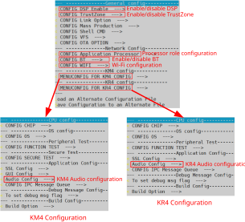
menuconfig UI
用户可通过 menuconfig.py 命令同时配置 KM4 和 KR4。
进入到
{SDK}\amebalite_gcc_project目录。在Windows的命令提示符窗口或Linux终端下运行
menuconfig.py命令。
备注
menuconfig.py 命令仅支持在 {SDK}\amebalite_gcc_project 路径下运行。
主要的配置选项由以下四部分组成:
General Config: KM4 and KR4 共享的配置选项，这些配置将同时影响KM4和KR4。Network Config: KM4 and KR4 共享的配置选项，这些配置将同时影响KM4和KR4。KM4 Config: 专为KM4设置的配置选项，这些配置仅会影响KM4，不会影响KR4。KR4 Config: 专为KR4设置的配置选项，这些配置仅会影响KR4，不会影响KM4。
下图展示了 menuconfig 的UI界面，常用的选项已被红色标注。
menuconfig UI
用户可通过 menuconfig.py 命令同时配置KM0/KM4/CA32。
进入到
{SDK}\amebasmart_gcc_project目录。在Windows的命令提示符窗口或Linux终端下运行
menuconfig.py命令。
备注
menuconfig.py 命令仅支持在 {SDK}\amebasmart_gcc_project 路径下运行。
主要的配置选项由以下四部分组成:
General Config: KM4 and KM0 共享的配置选项，这些配置将同时影响KM4和KM0。Network Config: KM4 and KM0 共享的配置选项，这些配置将同时影响KM4和KM0。KM4 Config: 专为KM4设置的配置选项，这些配置仅会影响KM4。KM0 Config: 专为KM0设置的配置选项，这些配置仅会影响KM0。CA32 Config: 专为CA32设置的配置选项，这些配置仅会影响CA32。
下图展示了 menuconfig 的UI界面，常用的选项已被红色标注。
{kind=link}
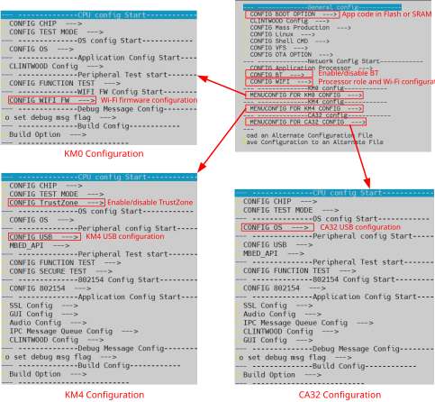
menuconfig UI
编译代码
本节介绍如何在Windows平台和Linux平台构建SDK，下方的表格列举了SDK中的所有GCC project路径。
GCC project |
Directory |
|---|---|
KM4 |
{SDK}\amebadplus_gcc_project\project_km4 |
KM0 |
{SDK}\amebadplus_gcc_project\project_km0 |
GCC project |
Directory |
|---|---|
KM4 |
{SDK}\amebalite_gcc_project\project_km4 |
KR4 |
{SDK}\amebalite_gcc_project\project_kr4 |
GCC project |
Directory |
|---|---|
KM4 |
{SDK}\amebalite_gcc_project\project_km4 |
KR4 |
{SDK}\amebalite_gcc_project\project_kr4 |
GCC project |
Directory |
|---|---|
CA32 |
{SDK}\amebasmart_gcc_project\project_ap |
KM4 |
{SDK}\amebasmart_gcc_project\project_hp |
KM0 |
{SDK}\amebasmart_gcc_project\project_lp |
备注
将表格中的 {SDK} 替换为用户自己的SDK路径。
我们提供了两种编译方式，请选择任意一种方式进行编译。
我们提供 build.py 脚本来简化项目的构建。
帮助指令
如果您是第一次使用
build.py脚本，可以通过下面命令了解此脚本的用法。build.py -h通过
-h或--help选项，所有支持的命令将会被列出。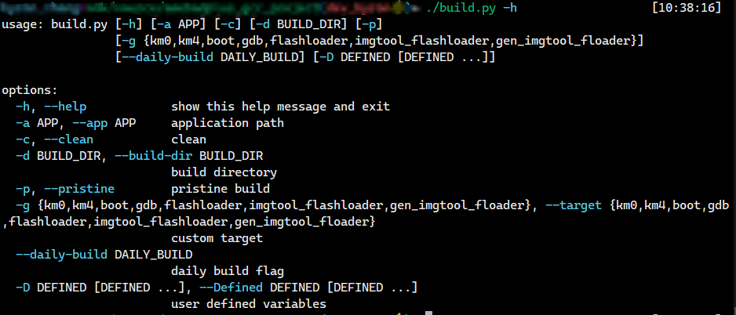
纯净构建
build.py -p纯净构建意味着此次构建环境没有之前残留产物的影响，所有之前构建的产物都会在此次构建之前被移除。
-p选项和--pristine选项等价。增量构建
build.py如果不带任何参数，项目将会进行增量构建，增量构建和全量构建相比会大大节省时间花费。
指定构建目录并构建
build.py -d <BUILD_DIR>此命令可指定存放中间产物的目录。如果不指定此选项，默认将会创建
build文件夹存放。构建指定example
build.py -a <APP>我们已经在
${SDK}/component/example目录下提供了一些应用示例。如果您想要构建其中一个示例，请确认示例名称与包含app_example.c的文件夹名称相同。然后通过-a或--app选项将应用名称传递给build.py。例如，如果您想要构建
http_client示例，您可以在路径${SDK}/component/example/network_protocol/http_client下找到它。此文件夹中包含了app_example.c、example_http_client.c、example_http_client.h和CMakeLists.txt文件。因此，您可以输入以下命令来完成示例构建：build.py -a http_client如果不通过
-a传入APP名，将构建一个默认的空项目。构建指定目标
build.py -g <TARGET>默认情况下，所有必要的目标将被一起构建。可以通过
-g或--target选项单独构建特定的目标，例如km0目标、km4目标、boot目标。可以通过-h选项查看所有可用目标。举个例子，如果您只想构建 km4，可以输入以下命令：
build.py -g km4项目清理
build.py -c-c和--clean都可以清理当前项目的产物及中间文件。传递CMake的cache变量
build.py -D CACHE_VAL1=VALUE1 CACHE_VAL2=VALUE2 …CMake 可以通过
-D选项设置cache变量的初始值。为了继承这一功能，build.py也同样支持-D选项。CMake 预定义的值和用户自定义的值都可以放在-D后面。更多关于本项目cache变量的描述，请参考${SDK}/amebaxxx_gcc_project目录下的CMakeLists.txt文件。备注
CMake 原生的
-D与build.py的-D之间的不同之处在于，CMake 要求每个变量定义前都要有-D前缀，例如-DCACHE_VAL1=VALUE1 -DCACHE_VAL2=VALUE2。而build.py要求所有变量跟随在一个单独的-D后面，并在-D和变量之间留有空格。例如：-D CACHE_VAL1=VALUE1 CACHE_VAL2=VALUE2
{kind=link}
如前述， build.py 是为简化构建步骤而提供的脚本。实际上，SDK 的构建基于CMake，Ninja等构建工具， build.py 正是对这些命令的封装。客户也可以直接使用CMake和Ninja的原生命令进行构建。
首次构建
第一次构建时需要键入的命令如下，这些命令在Windows和Linux上通用：
mkdir build cd build cmake .. -G Ninja [-DEXAMPLE=APP …] ninja
备注
-G选项可以指定CMake的生成器，-G Ninja表示使用Ninja生成器。若用户倾向使用make 生成器，可以通过-G "Unix Makefiles"（Linux），-G "MinGW Makefiles"（Windows）指定，如果这么做，后续的 ninja 命令需替换为 make 命令。CMake 使用
-D选项传递cache变量。-DEXAMPLE=APP可以指定对应的APP模板，更多关于本项目cache变量的描述，请参考${SDK}/amebaxxx_gcc_project目录下的CMakeLists.txt文件。
增量构建
ninja项目在初次构建后已被配置并生成。对于增量构建，仅需执行
ninja命令即可。这意味着cmake ..命令仅需执行一次。如果项目需要被重新配置，ninja命令可以自动重新调用 CMake。清理项目
ninja clean此命令可清理项目。
备注
如果想要删除CMake中的所有cache变量，建议运行命令
rm -rf build。
编译镜象
如果终端信息中出现
target_img2.axf以及Image manipulating end(参见 KM4 & KM0 projects 构建日志), 意味着所有image文件生成完毕。最终的image文件将被拷贝到\amebadplus_gcc_project路径下 (参见 KM4 & KM0 image 生成). 用户也可以在\amebadplus_gcc_project\project_km0\asdk\image和\amebadplus_gcc_project\project_km4\asdk\image中找到这些文件。CMake生成的中间文件将会被存放在
build文件夹。如果生成失败, 尝试运行
build.py -c或ninja clean后重新构建。

KM4 & KM0 projects 构建日志

KM4 & KM0 image 生成
备注
如果想要获取 .map 文件进行调试， 请在 \amebadplus_gcc_project\project_km0\asdk\image ， \amebadplus_gcc_project\project_km4\asdk\image 路径中查找。注意不在 \amebadplus_gcc_project 路径。
如果终端信息中出现
target_img2.axf以及Image manipulating end, 意味着所有image文件生成完毕。最终的image文件将被拷贝到\amebalite_gcc_project路径下. 用户也可以在\amebalite_gcc_project\project_km0\asdk\image和\amebalite_gcc_project\project_km4\asdk\image中找到这些文件。CMake生成的中间文件将会被存放在
build文件夹。如果生成失败, 尝试运行
build.py -c或ninja clean后重新构建。
{kind=link}
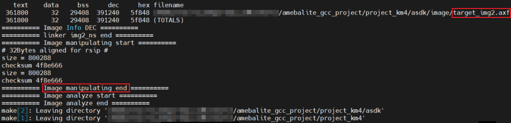
KM4 & KR4 projects 构建日志
{kind=link}
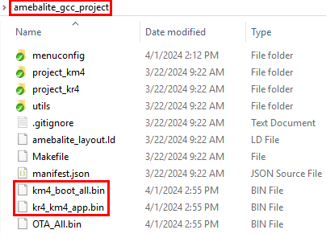
KM4 & KR4 image 生成
备注
如果想要获取 .map 文件进行调试， 请在 amebalite_gcc_project\project_kr4\vsdk\image ， amebalite_gcc_project\project_km4\asdk\image 路径中查找。注意不在 amebalite_gcc_project 路径。
如果终端信息中出现
target_img2.axf以及Image manipulating end, 意味着所有image文件生成完毕。最终的image文件将被拷贝到\amebalite_gcc_project路径下. 用户也可以在\amebalite_gcc_project\project_km0\asdk\image和\amebalite_gcc_project\project_km4\asdk\image中找到这些文件。CMake生成的中间文件将会被存放在
build文件夹。如果生成失败, 尝试运行
build.py -c或ninja clean后重新构建。
KM4 & KR4 projects 构建日志
KM4 & KR4 image 生成
备注
如果想要获取 .map 文件进行调试， 请在 amebalite_gcc_project\project_kr4\vsdk\image ， amebalite_gcc_project\project_km4\asdk\image 路径中查找。注意不在 amebalite_gcc_project 路径。
如果终端信息中出现
target_img2.axf以及Image manipulating end(参见 KM4 & KM0 & CA32 构建日志), 意味着所有image文件生成完毕。最终的image文件将被拷贝到\amebasmart_gcc_project路径下 (参见 KM4 & KM0 & CA32 image 生成). 用户也可以在\project_hp\asdk\image,\project_lp\asdk\image， 和\project_ap\asdk\image中找到这些文件。CMake生成的中间文件将会被存放在
build文件夹。如果生成失败, 尝试运行
build.py -c或ninja clean后重新构建。
{kind=link}
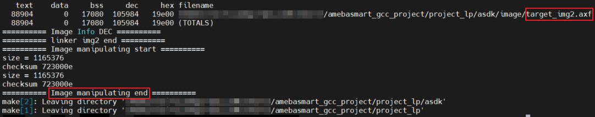
KM4 & KM0 & CA32 构建日志

KM4 & KM0 & CA32 image 生成
备注
如果想要获取 .map 文件进行调试， 请在 \project_hp\asdk\image, \project_lp\asdk\image 或 \project_ap\asdk\image 中进行查找。
镜象下载
我们提供了 ImageTool 专门用于镜像的下载请参考 Image Tool.
设置调试器
Probe
RLX Probe debugger (Probe) is an in-house ICE solution to debug CPU. We can use Probe to download the software and enter GBD debugger mode under GCC environment. For Windows and Linux server, the operations are the same.
Install Probe driver
Before using the Probe, install its driver correctly.
Location:
{SDK}\tools\probeDriver:
RLX_Probe_Driver_2.3.xxx_Setup.exe
Refer to the following table to connect Probe debugger to the SWD, that is, connect TCK pin of Probe to SWD CLK pin, and TMS pin of Probe to SWD DATA pin. What’s more, a common ground is needed between Probe Board and Device Board.
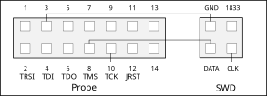
Wiring diagram of connecting Probe to SWD
{kind=link}
KM4 Setup
Execute the
cm4_RTL_Probe.batExecute the
cm4 _RTL_Probe.batunder\amebadplus_gcc_project\utils\jlink_script. The started Probe server looks like the following figure. This window should NOT be closed if you want to enter debug mode.
KM4 Probe server connection under Windows
备注
The default path of Probe driver in RTL_Probe_cm4.bat file is
C:\RLX\PROBE\rlx_probe_driver.exe, you may have to change the path according to your own settings.Setup Probe for KM4
Change directory to project_hp.
On the MSYS2 terminal, type
$ make setup GDB_SERVER=probecommand to select Probe debugger, as Figure 1-10 shows.

KM4 Probe setup under Windows
KM0 Setup
Execute the
RTL_Probe_cm0.batExecute the
RTL_Probe_cm0.batunder\amebadplus_gcc_project\utils\jlink_script. This operation will connect the Probe to both KM0 and KM4.备注
Connect to target KM0 with port
2331, and KM4 with port2335.The started Probe server looks like the following figure. This window should NOT be closed if you want to download the image or enter debug mode.
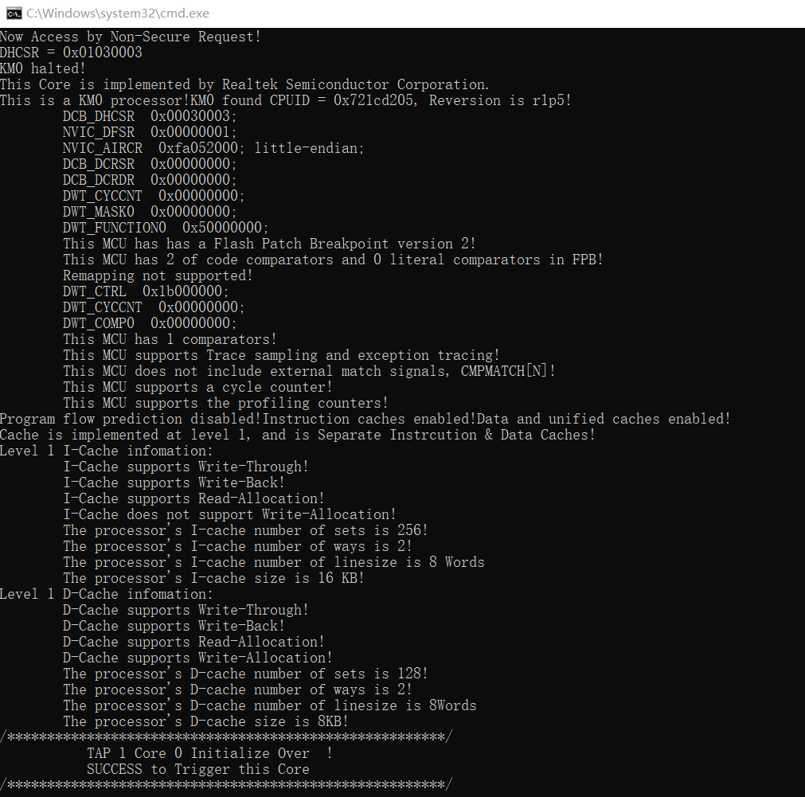
KM0 Probe server connection under Windows
Setup Probe for KM0
On the MSYS2 terminal, type
$make setup GDB_SERVER=probecommand to select Probe debugger.
KM0 Probe setup under Windows
{kind=link}
J-Link
Before setting J-Link debugger, you need to do some hardware configuration and download images first.
Connect J-Link to the SWD interface.
Refer to the following figure to connect SWCLK pin of J-Link to SWD CLK pin, and SWDIO pin of J-Link to SWD DATA pin.
Connect the device to PC after finishing these configurations.

Wiring diagram of connecting J-Link to SWD
备注
J-Link version must be v9 or higher. If Virtual Machine (VM) is used as your platform, make sure that the USB connection setting between VM host and client is correct, so that the VM host can detect the device.
Download images via ImageTool.
ImageTool is a software tool provided by Realtek. For more information, refer to Image Tool.
Windows
Besides the hardware configuration, J-Link GDB server is also required to install.
For Windows, click and download the software in J-Link Software and Documentation Pack, then install it correctly.
备注
The version of J-Link GDB server below is just an example, you can select the latest version to download.
KM4 Setup
Execute the
cm4_jlink.batDouble-click the
cm4_jlink.batunder{SDK}\amebadplus_gcc_project\utils\jlink_script. You may have to change the path of JLinkGDBServer.exe and JLink.exe in thecm4_jlink.batscript according to your own settings.The started J-Link GDB server looks like below. This window should NOT be closed if you want to download the image or enter debug mode.

KM4 J-Link GDB server connection under Windows
备注
Keep this window active to download the images to target.
Setup J-Link for KM4
Change the working directory to project_km4.
On the MSYS2 terminal, type
$make setup GDB_SERVER=jlinkcommand before selecting J-Link debugger.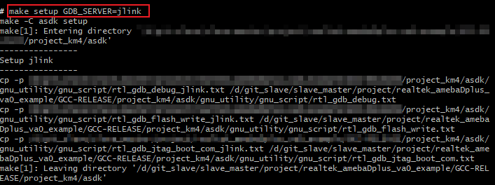
KM4 J-Link setup under Windows
{kind=link}
KM0 Setup
Execute the
cm0_jlink.batDouble-click the
cm0_jlink.batunder{SDK}\amebadplus_gcc_project\utils\jlink_script, the same as executing thecm4_jlink.bat.The started J-Link GDB server looks like below. This window should NOT be closed if you want to download the image or enter debug mode. Because KM4 will download all the images, you don’t need to connect J-Link to KM0 when downloading images. J-Link can connect to KM0 when debugging.

KM0 J-Link GDB server connection under Windows
Setup J-Link for KM0
Change working directory to project_km0.
On the Cygwin terminal, type
$make setup GDB_SERVER=jlinkcommand to select J-Link debugger.

KM0 J-Link setup under Windows
KM4 Setup
Execute the
km4_jlink_combination.batDouble-click the
km4_jlink_combination.batunder{SDK}\amebalite_gcc_project\utils\jlink_script. You may have to change the path ofJLinkGDBServer.exeandJLink.exein thekm4_jlink_combination.batscript according to your own settings.The started J-Link GDB server looks like below. This window should NOT be closed if you want to download the image or enter debug mode.
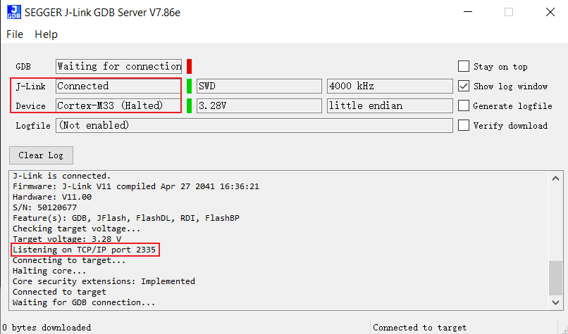
KM4 J-Link GDB server connection under Windows
小心
Keep this window active to download the images to target.
Setup J-Link for KM4
Change the working directory to project_km4.
On the MSYS2 terminal, type
$make setup GDB_SERVER=jlinkcommand before selecting J-Link debugger.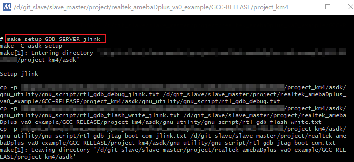
KM4 J-Link setup under Windows
{kind=link}
{kind=link}
KR4 Setup
Execute the
kr4_jlink_combination.batDouble-click the
kr4_jlink_combination.batunder{SDK}\amebalite_gcc_project\utils\jlink_script, the same as executing thekm4_jlink_combination.bat.The started J-Link GDB server looks like below. This window should NOT be closed if you want to download the image or enter debug mode. Because KM4 will download all the images, you don’t need to connect J-Link to KR4 when downloading images. J-Link can connect to KR4 when debugging.
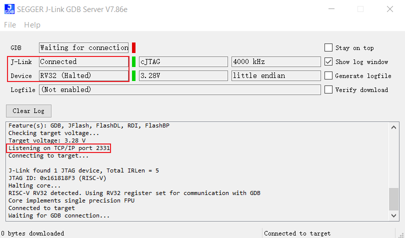
KR4 J-Link GDB server connection under Windows
Setup J-Link for KR4
Change working directory to project_kr4.
On the Cygwin terminal, type
$make setup GDB_SERVER=jlinkcommand to select J-Link debugger.

KR4 J-Link setup under Windows
{kind=link}
KM4 Setup
Execute the
km4_jlink_combination.batDouble-click the
km4_jlink_combination.batunder{SDK}\amebalite_gcc_project\utils\jlink_script. You may have to change the path ofJLinkGDBServer.exeandJLink.exein thekm4_jlink_combination.batscript according to your own settings.The started J-Link GDB server looks like below. This window should NOT be closed if you want to download the image or enter debug mode.
KM4 J-Link GDB server connection under Windows
小心
Keep this window active to download the images to target.
Setup J-Link for KM4
Change the working directory to project_km4.
On the MSYS2 terminal, type
$make setup GDB_SERVER=jlinkcommand before selecting J-Link debugger.KM4 J-Link setup under Windows
KR4 Setup
Execute the
kr4_jlink_combination.batDouble-click the
kr4_jlink_combination.batunder{SDK}\amebalite_gcc_project\utils\jlink_script, the same as executing thekm4_jlink_combination.bat.The started J-Link GDB server looks like below. This window should NOT be closed if you want to download the image or enter debug mode. Because KM4 will download all the images, you don’t need to connect J-Link to KR4 when downloading images. J-Link can connect to KR4 when debugging.
KR4 J-Link GDB server connection under Windows
Setup J-Link for KR4
Change working directory to project_kr4.
On the Cygwin terminal, type
$make setup GDB_SERVER=jlinkcommand to select J-Link debugger.
KR4 J-Link setup under Windows
KM4 Setup
Execute the
cm4_jlink.batDouble-click the
cm4_jlink.batunder{SDK}\amebasmart_gcc_project\utils\jlink_script. You may have to change the path ofJLinkGDBServer.exein thecm4_jlink.batscript according to your own settings.The started J-Link GDB server looks like below. This window should NOT be closed if you want to download the image or enter debug mode.

KM4 J-Link GDB server connection under Windows
小心
Keep this window active to download the images to target.
Switch directory to project_hp for KM4
Use
$cdcommand to change the directory to project_hp, then you can input commands in Section 命令列表 or GDB 调试器的基本用法.
KM0 Setup
Execute the
cm0_jlink.batDouble-click the
cm0_jlink.batunder{SDK}\amebasmart_gcc_project\utils\jlink_script, the same as executing thecm4_jlink.bat.The started J-Link GDB server looks like below. This window should NOT be closed if you want to download the image or enter debug mode. Because KM4 will download all the images, you don’t need to connect J-Link to KM0 when downloading images. J-Link can connect to KM0 when debugging.
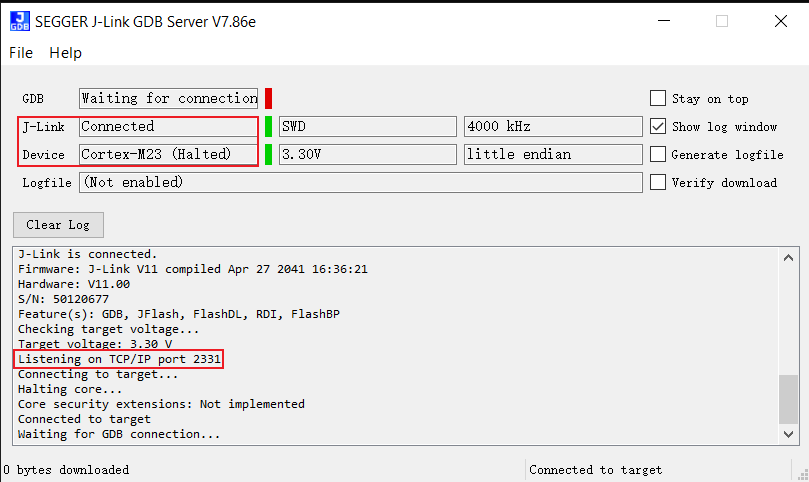
KM0 J-Link GDB server connection under Windows
Switch directory to project_lp for KM0
Use
$cdcommand to change the directory to project_lp, then you can input command in Section 命令列表 or GDB 调试器的基本用法.
{kind=link}
CA32 Setup
The CA32 has two cores named core0 and core1, which can be debugged separately. By default, ca32_jlink_core0.bat is for core0 and ca32_jlink_core1.bat is for core1.
Double-click the
ca32_jlink_core0.batunder{SDK}\amebasmart_gcc_project\utils\jlink_script.The started J-Link GDB server looks like below. CA32 core0 listens on port 2337 by default. This GDB Server window should NOT be closed if you want to enter debug mode.

CA32 core0 J-Link GDB server connection under Windows
Double click the
ca32_jlink_core1.batunder{SDK}\amebasmart_gcc_project\utils\jlink_script.The started J-Link GDB server looks like below. CA32 core1 listens on port 2339 by default.
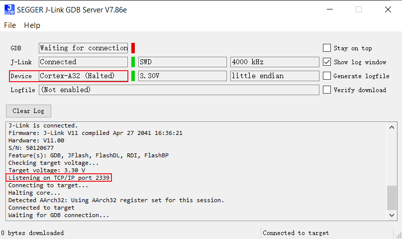
CA32 core1 J-Link GDB server connection under Windows
{kind=link}
小心
When opening core1 GDB server, core0 and core1 will halt and can’t run together. Open this window only when you want to debug two cores together, and you know what you are doing.
To debug core0 and core1 separately, make sure that function
EnabelCrossTrigger()is commented out as below.
void InitTarget(void) {
Report("******************************************************");
Report("J-Link script: AmebaSmart (Cortex-A32 CPU0) J-Link script");
Report("******************************************************");
…
//EnabelCrossTrigger(); // comment out if needed
}
Linux
For J-Link GDB server, click and download the software in J-Link Software and Documentation Pack. It is suggested to use Debian package manager to install the Debian version.
Open a new terminal and type the following command to install GDB server. After the installation of the software pack, there is a tool named “JLinkGDBServer” under the J-Link directory. Take Ubuntu 18.04 as an example, the JLinkGDBServer can be found at /opt/SEGGER/JLink.
$dpkg –i jlink_6.0.7_x86_64.deb
备注
The version of J-Link GDB server below is just an example, you can select the latest version to download.
KM4 Setup
Connect to KM4
Open a new terminal under directory
/amebadplus_gcc_project/utils/jlink_script, and type$/opt/SEGGER/JLink/JLinkGDBServer -select USB-device Cortex-M33 -if SWD -scriptfileAP2_KM4.JLinkScript port 2335.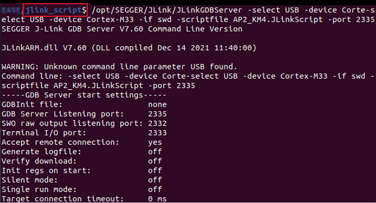
KM4 J-Link GDB server connection setting under Linux
If the connection is successful, the log is shown as below. This terminal should NOT be closed if you want to download software or enter GDB debugger mode.

KM4 J-Link GDB server connection success under Linux
Setup J-Link for KM4
Open a new terminal under project_km4 folder, and type
$make setup GDB_SERVER=jlinkcommand before using J-Link to download software or enter GDB debugger.
KM4 J-Link terminal setup under Linux
{kind=link}
KM0 Setup
Connect to KM0
Open a new terminal under directory
/amebadplus_gcc_project/utils/jlink_script, and type$/opt/SEGGER/JLink/JLinkGDBServer -select USB -device Cortex-M23 -if SWD -scriptfile AP1_KM0.JLinkScript port 2331.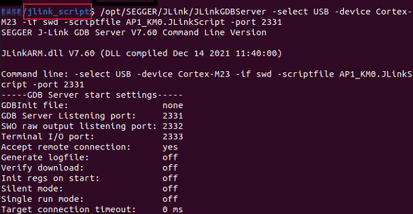
KM0 J-Link GDB server connection setting under Linux
If the connection is successful, the log is shown below.

KM0 J-Link GDB server connection success under Linux
Setup J-Link for KM0
Open a new terminal under project_km0, and type
$make setup GDB_SERVER=jlinkcommand before using J-Link to download software or enter GDB debugger.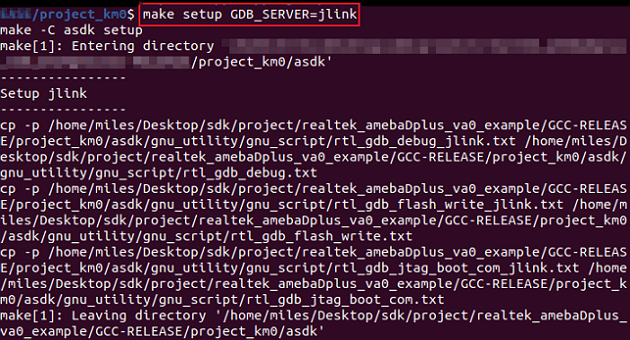
KM0 J-Link terminal setup under Linux
{kind=link}
{kind=link}
KM4 Setup
Connect to KM4
Open a new terminal under
amebalite_gcc_project/utils/jlink_script, and type$/opt/SEGGER/JLink/JLinkGDBServer -select USB-device Cortex-M33 -if SWD -scriptfile AP0_KM4.JLinkScript port 2335.
KM4 J-Link GDB server connection setting under Linux
If the connection is successful, the log is shown as below. This terminal should NOT be closed if you want to download software or enter GDB debugger mode.

KM4 J-Link GDB server connection success under Linux
Setup J-Link for KM4
Open a new terminal under project_km4 folder, and type
$make setup GDB_SERVER=jlinkcommand before using J-Link to download software or enter GDB debugger.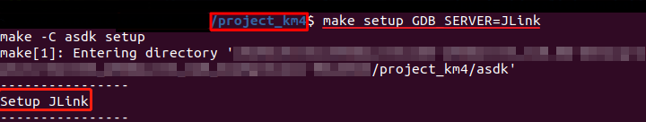
KM4 J-Link terminal setup under Linux
{kind=link}
KR4 Setup
Connect to KM4
Before connecting to KR4, open a new terminal under
amebalite_gcc_project/utils/jlink_script, and type$/opt/SEGGER/JLink/ JLinkExe -device Cortex-M33 -if swd -autoconnect 1 -speed 1000 -JLinkScriptFile KM4_SEL.JLinkScriptto connect to KM4 by J-Link at first.
KM4 J-Link connection setting under Linux
If the connection is successful, the log is shown as below.
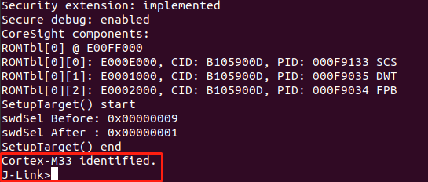
KM4 J-Link connection success under Linux
Connect to KR4
After KM4 is connected by J-Link successfully, open a new terminal under the same working directory and type
$/opt/SEGGER/JLink/JLinkGDBServer -select USB-device RV32 -if cjtag -port 2331to connect to KR4.
KR4 J-Link GDB server connection setting under Linux
If the connection is successful, the log is shown as below. This terminal should NOT be closed if you want to download software or enter GDB debugger mode. And it is OK to close the J-Link window of KM4.
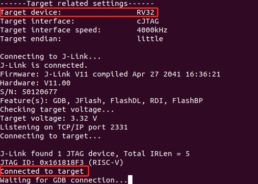
KR4 J-Link GDB server connection success under Linux
Setup J-Link for KR4
Open a new terminal under project_kr4, and type
$make setup GDB_SERVER=jlinkcommand before using J-Link to download software or enter GDB debugger.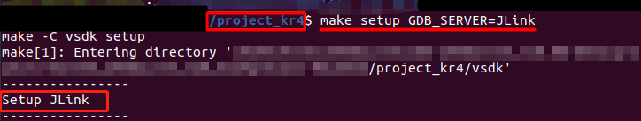
KR4 J-Link terminal setup under Linux
{kind=link}
{kind=link}
{kind=link}
KM4 Setup
Connect to KM4
Open a new terminal under
amebalite_gcc_project/utils/jlink_script, and type$/opt/SEGGER/JLink/JLinkGDBServer -select USB-device Cortex-M33 -if SWD -scriptfile AP0_KM4.JLinkScript port 2335.
KM4 J-Link GDB server connection setting under Linux
If the connection is successful, the log is shown as below. This terminal should NOT be closed if you want to download software or enter GDB debugger mode.
KM4 J-Link GDB server connection success under Linux
Setup J-Link for KM4
Open a new terminal under project_km4 folder, and type
$make setup GDB_SERVER=jlinkcommand before using J-Link to download software or enter GDB debugger.KM4 J-Link terminal setup under Linux
KR4 Setup
Connect to KM4
Before connecting to KR4, open a new terminal under
amebalite_gcc_project/utils/jlink_script, and type$/opt/SEGGER/JLink/ JLinkExe -device Cortex-M33 -if swd -autoconnect 1 -speed 1000 -JLinkScriptFile KM4_SEL.JLinkScriptto connect to KM4 by J-Link at first.
KM4 J-Link connection setting under Linux
If the connection is successful, the log is shown as below.
KM4 J-Link connection success under Linux
Connect to KR4
After KM4 is connected by J-Link successfully, open a new terminal under the same working directory and type
$/opt/SEGGER/JLink/JLinkGDBServer -select USB-device RV32 -if cjtag -port 2331to connect to KR4.
KR4 J-Link GDB server connection setting under Linux
If the connection is successful, the log is shown as below. This terminal should NOT be closed if you want to download software or enter GDB debugger mode. And it is OK to close the J-Link window of KM4.
KR4 J-Link GDB server connection success under Linux
Setup J-Link for KR4
Open a new terminal under project_kr4, and type
$make setup GDB_SERVER=jlinkcommand before using J-Link to download software or enter GDB debugger.KR4 J-Link terminal setup under Linux
KM4 Setup
Open a new terminal under
{SDK}/amebasmart_gcc_project/utils/jlink_script.Type
$/opt/SEGGER/JLink/JLinkGDBServer -device cortex-m33 -if SWD -scriptfile AP1_KM4.JLinkScript -port 2335. This terminal should NOT be closed if you want to download software or enter GDB debugger mode.
If the connection is successful, the log is shown as below.

KM4 J-Link GDB server connection success
KM0 Setup
Open a new terminal under
{SDK}/amebasmart_gcc_project/utils/jlink_script.Type
$/opt/SEGGER/JLink/JLinkGDBServer -device cortex-m23 -if SWD -scriptfile AP0_KM0.JLinkScript -port 2331.This terminal should NOT be closed if you want to download software or enter GDB debugger mode.
If the connection is successful, the log is shown as below.
{kind=link}
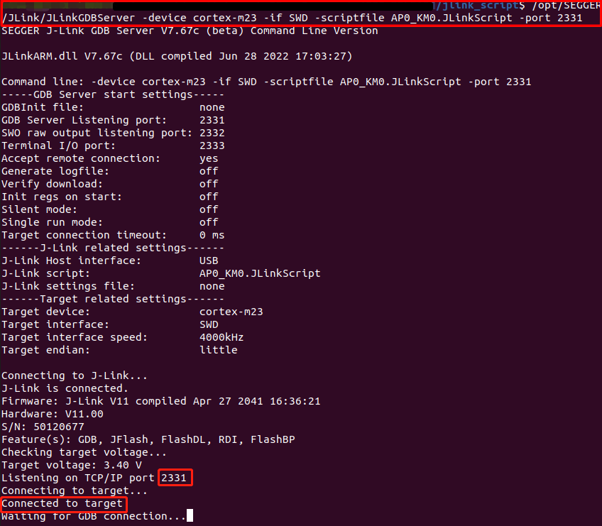
KM0 J-Link GDB server connection success
CA32 Setup
For CA32 core0:
Open a new terminal under
{SDK}/amebasmart_gcc_project/utils/jlink_script.Type
$/opt/SEGGER/JLink/JLinkGDBServer -device cortex-a32 -if SWD -scriptfile AP3_CA32_Core0.JLinkScript -port 2337. This terminal should NOT be closed if you want to download software or enter GDB debugger mode.
If the connection is successful, the log is shown as below.

CA32 core0 J-Link GDB server connection
For CA32 core1:
Open a new terminal under
{SDK}/amebasmart_gcc_project/utils/jlink_script.Type
$/opt/SEGGER/JLink/JLinkGDBServer -device cortex-a32 -if SWD -scriptfile AP3_CA32_Core1.JLinkScript -port 2339. This terminal should NOT be closed if you want to download software or enter GDB debugger mode.
If the connection is successful, the log is shown as below.
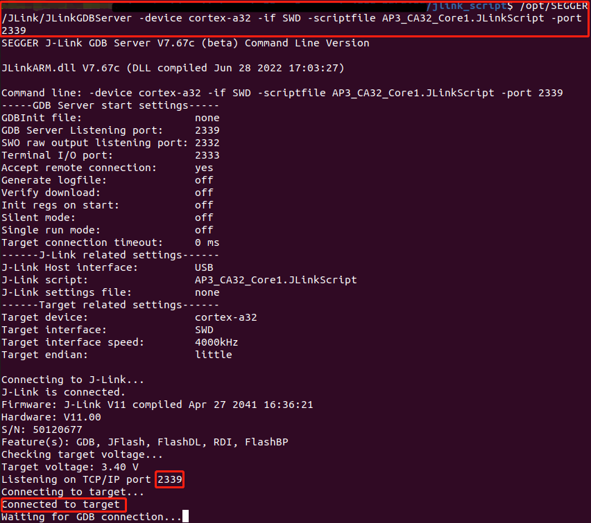
CA32 core1 J-Link GDB server connection under Linux
{kind=link}
下载固件至 Flash
有两种方法可以下载固件至 Flash：
使用 Realtek 提供的 Image Tool 软件（推荐）。更多信息请参考 Image Tool。
利用 GDB Server，主要用于 GDB 调试的情形。
本节主要介绍第二种下载固件到 Flash 的方式。
要将固件下载到设备中，首先确认完成 编译代码 中的步骤，然后键入 build.py -gdb 命令开始下载。
通过此命令，固件将被 KM4 下载到 Flash 中，整个过程需要几秒钟才能完成，如下所示。

下载固件到Flash

下载成功的日志提示
为确认固件是否被正确地下载进去，可以在下载之前勾选 verify download ，在固件下载过程中，将会有 verified OK 的日志提示。

Verify download
下载完成后按下 Reset 按键，可以看到设备使用新的固件启动。
进入调试模式
GDB Server
要进入GDB 调试模式，请根据以下步骤执行：
J-Link
在命令提示符中拷贝对应target的 J-Link 命令并执行：
For KM4:
"{Jlink_path}\JLink.exe" -device Cortex-M33 -if SWD -speed 4000 -autoconnect 1
For KM0:
"{Jlink_path}\JLink.exe" -device Cortex-M23 -if SWD -speed 4000 -autoconnect 1
For KM4:
"{Jlink_path}\JLink.exe" -device Cortex-M33 -if SWD -speed 4000 -autoconnect 1
For KR4:
First:
"{Jlink_path}\JLink.exe" -device Cortex-M33 -if SWD -speed 4000 -autoconnect 1 -JLinkScriptFile {script_path}\KM4_SEL.JLinkScript
Then:
"{Jlink_path}\JLink.exe" -device RV32 -if cjtag -speed 4000 -JTAGConf -1,-1 -autoconnect 1
From KR4 to KM4:
First:
"{Jlink_path}\JLink.exe" -device RV32 -if cjtag -speed 4000 -JTAGConf -1,-1 -JLinkScriptFile {script_path}\KR4_DMI.JLinkScript
Then:
"{Jlink_path}\JLink.exe" -device Cortex-M33 -if SWD -speed 4000 -autoconnect 1
For KM4:
"{Jlink_path}\JLink.exe" -device Cortex-M33 -if SWD -speed 4000 -autoconnect 1
For KR4:
First:
"{Jlink_path}\JLink.exe" -device Cortex-M33 -if SWD -speed 4000 -autoconnect 1 -JLinkScriptFile {script_path}\KM4_SEL.JLinkScript
Then:
"{Jlink_path}\JLink.exe" -device RV32 -if cjtag -speed 4000 -JTAGConf -1,-1 -autoconnect 1
From KR4 to KM4:
First:
"{Jlink_path}\JLink.exe" -device RV32 -if cjtag -speed 4000 -JTAGConf -1,-1 -JLinkScriptFile {script_path}\KR4_DMI.JLinkScript
Then:
"{Jlink_path}\JLink.exe" -device Cortex-M33 -if SWD -speed 4000 -autoconnect 1
For KM4:
"{Jlink_path}\JLink.exe" -device Cortex-M33 -if SWD -speed 4000 -autoconnect 1 -JLinkScriptFile {script_path}\AP1_KM4.JLinkScript
For KM0:
"{Jlink_path}\JLink.exe" -device Cortex-M23 -if SWD -speed 4000 -autoconnect 1 -JLinkScriptFile {script_path}\AP0_KM0.JLinkScript
For CA32 core0:
"{Jlink_path}\JLink.exe" -device Cortex-A32 -if SWD -speed 4000 -autoconnect 1 -JLinkScriptFile {script_path}\AP3_CA32_Core0.JLinkScript
For CA32 core1:
"{Jlink_path}\JLink.exe" -device Cortex-A32 -if SWD -speed 4000 -autoconnect 1 -JLinkScriptFile {script_path}\AP3_CA32_Core1.JlinkScript
备注
{Jlink_path}： Segger J-Link 的安装路径，默认为C:\Program Files (x86)\SEGGER\JLink.{script_path}：{SDK}\amebaxxx_gcc_project\utils\jlink_script
命令
以下命令在程序 stuck 时经常使用。所有命令均不区分大小写。
命令（长） |
命令 （短） |
语法 |
解释 |
|---|---|---|---|
Halt |
H |
暂停 CPU |
|
Go |
G |
取消 CPU 暂停状态 |
|
Mem |
Mem <Addr> <NumBytes> |
读取内存并显示ASCII码值 |
|
SaveBin |
SaveBin <FileName> <Addr> <NumBytes> |
将目标内存保存为二进制文件 |
|
Exit |
关闭 J-Link 连接并退出 |
更多信息参见： https://wiki.segger.com/J-Link_Commander.
备注
可以多次输入
H和G命令并记录程序计数器（PC）的值，然后在汇编文件中查找该 PC 值对应的函数。这个函数可能是您遇到问题的地方。也可以使用
mem命令来转储一些位于栈指针（sp）之后的地址内容，通过这些地址信息，您可以找到函数调用栈。
命令列表
前面提到的命令列在下方表格中。
功能 |
命令 |
描述 |
|---|---|---|
帮助 |
|
列出支持的命令 |
构建 |
|
增量构建工程 |
纯净构建 |
|
移除所有产物并构建工程 |
指定示例 |
|
构建名为 APP 的示例 |
指定目标 |
|
构建指定的 target |
清理 |
|
清理构建产物 |
下载 |
|
通过GDB下载固件 |
调试 |
|
进入调试模式 |
GDB 调试器的基本用法
GDB（GNU项目调试器）允许您在程序执行过程中对其进行检查，并帮助捕捉错误。章节 进入调试模式 已经描述了如何进入GDB调试模式，而本节将展示一些GDB命令的基本用法。
关于GDB调试器的更多信息，请访问 GNU官方网站。下表描述了常用的指令及其功能，具体使用方法请参见 GDB用户手册。
功能 |
命令 |
描述 |
|---|---|---|
断点 |
$break |
断点可以通过 break 命令（缩写为 b）设置。 使用方法请参见 Setting Breakpoints （设置断点）部分。 |
观察点 |
$watch |
您可以使用观察点在表达式的值发生变化时停止执行。相关命令包括 watch、rwatch 和 awatch。使用方法请参见 Setting Watchpoints （设置观察点）部分。 备注 保持观察点的范围小于 20 字节。 |
打印断点与观察点信息 |
$info |
要打印所有已设置且未删除的断点和观察点的表格，请使用 info 命令。 您可以简单地输入 info 来了解其用法。 |
删除断点 |
$delete |
要删除断点，请使用 delete 命令（缩写为 d）。 使用方法请参见 Deleting Breakpoints （删除断点）部分。 |
继续执行 |
$continue |
要恢复程序执行，请使用 continue 命令（缩写为 c）。 使用方法请参见 Continue and Stepping （继续和单步执行）部分。 |
Step |
$step |
要进入函数调用，请使用 step 命令（缩写为 s）。它将继续运行您的程序，直到控制到达不同的源代码行。 使用方法请参见 Continue and Stepping （继续和单步执行）部分。 |
Next |
$next |
要逐步执行程序，请使用 next 命令（缩写为 n）。执行将在原始堆栈级别的不同代码行处停止。 使用方法请参见 Continue and Stepping （继续和单步执行）部分。 |
退出 |
$quit |
要退出 GDB 调试器，请使用 quit 命令（缩写为 q），或键入文件结束字符（通常是 Ctrl-d）。 使用方法请参见 Quitting GDB （退出 GDB）部分。 |
堆栈回溯 |
$backtrace |
回溯是总结您的程序如何到达当前位置的一种方式。您可以使用 backtrace 命令（缩写为 bt）来打印整个堆栈的回溯。 使用方法请参见 Backtraces （回溯）部分 |
打印源代码行 |
$list |
要打印源文件中的行，请使用 list 命令（缩写为 l）。 使用方法请参见 Printing Source Lines （打印源代码行）部分。 |
检查数据 |
要检查程序中的数据，您可以使用 print 命令（缩写为 p）。它计算并打印表达式的值。 使用方法请参见 Examining Data （检查数据）部分 |